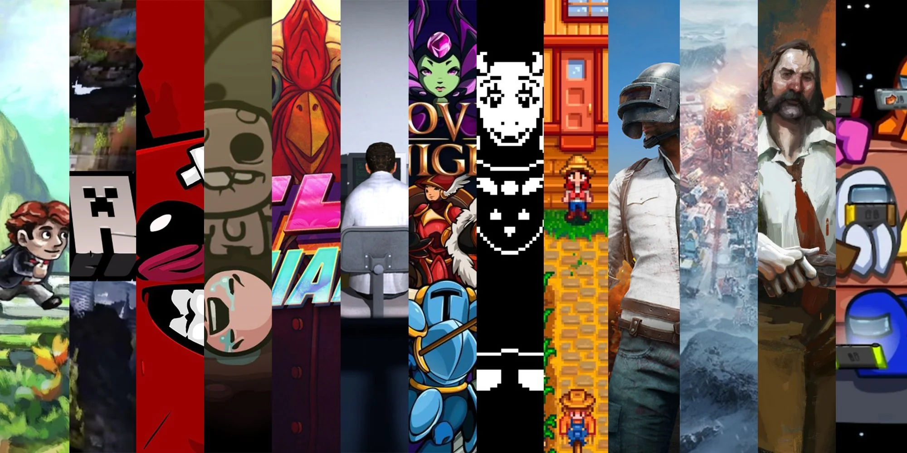

Reseña: The Legend of Zelda: Breath of the Wild
Un análisis profundo del juego que redefinió el género de mundo abierto.

En este artículo, exploramos los aspectos innovadores del juego, desde su diseño de mundo abierto hasta las mecánicas de juego que lo hacen único.
Top 10 Juegos Indie que Debes Jugar
Una selección de los mejores juegos independientes que han marcado la última década.

Estos juegos han demostrado que no se necesita un gran presupuesto para ofrecer una experiencia inolvidable. Aquí te contamos cuáles no puedes dejar pasar.
Noticias: Próximos Lanzamientos en 2024
Lo que nos espera en el mundo de los videojuegos para el próximo año.

2024 promete ser un año emocionante para los gamers, con lanzamientos muy esperados. Descubre qué títulos se perfilan como los más prometedores.